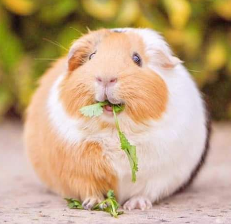

기니피그

케이지를 자주 청소하여 항상 깨끗이 한다.
기니피그의 건강에 유익한 온도는 18도에서 23도까지이다.
습기와 지나친 더위에 약하므로 주의하여야 한다.
주식은 건초인데, 알팔파 건초와 티모시 건초로 나뉜다.
알팔파 건초는 보통 6개월전까지 먹이고 티모시 건초는 6개월 이후에 먹인다.
알팔파나 티모시를 먹일 땐 최대 무한증정을 해주어야 하고 기니피그의 사료인 펠렛은 건초든 사료든 옥스보우가 제일 낫다. (크래쉬따는 절대 안된다).
기니피그는 체내에서 비타민 C를 합성하지 못하므로 비타민 C가 많이 함유된 먹이를 주어야 한다.
물은 충분히 주어야 하나 채소 등 물기가 많은 먹이를 너무 많이 주면 설사를 하므로 주의하여야 한다.
굉장히 온순하며 겁이 많은 편이다.
거의 모든 설치류의 특성상 기니피그도 어둡고 음침한 구석을 좋아하기 때문에 어디서 키우든 반드시 숨을 은신처를 마련해 줘야 한다.
기니피그는 여러 마리를 길러야 한다.
원래 단체 생활을 하는 동물이기 때문에 한 마리만 키우면 외로움을 탄다.
위의 엉덩이 만지기와 마찬가지로 감성적인 외로움 때문이라기보다는 피식자(Prey)이다 보니 생존을 위해 무리를 이루려는 본능 때문이다.
혼자 있으면 극심한 불안감을 느끼게 된다.
식성은 채식이므로 곡물류는 주면 안 된다.
기니피그는 딸꾹질이 잦다.
'꾹 꾹' 하는 소리와 함께 몸을 움찔거리며 뭔가를 뱉어내려는 행동을 하는데 입에서 나오는 것은 없다.
이것은 정상적인 증상이며 이상할 정도로 너무 많이, 자주 하는 것이 아니면 큰 걱정을 할 필요는 없다.
기니피그는 몸집이 작은 만큼 뼈도 얇아 부러지기 쉽다.
다리를 질질 끌거나 다리가 이상하게 휘어있으면 골절이다.
수술을 하기 위해선 마취가 필요한데 마취를 하면 깨어나지 못하는 경우도 있다.
수술비는 약 70만 원 정도이다.
추락으로 인해 골절이 생기면 여러 가지 합병증이 생기거나 이빨이 빠지는 경우가 있기 때문에 잘 확인하고 병원에 데려가는 것이 좋다.
중요한 것은 운동이다.
기니피그도 인간과 같이 성인병에 걸릴 수 있다.
소형동물들은 먹는 것도 중요하지만 먹어서 얻은 에너지를 적절히 소모하여 적당한 체중을 유지할 수 있도록 운동을 시키는 것도 중요하다.
코 주변의 털이 빠지고 콧물이 보인다.
코 주변이 젖어있거나 혹같은 것이 보인다.
흐릿하거나 푹 들어가거나 심하게 많이 튀어나온 눈을 하고 있다.
한쪽 눈, 혹은 두쪽 눈을 감고 있다.
걸을 때 머리가 한쪽으로 쏠린다.
귀 밖에 하얀 각질이 생긴다.
털이 아주 많이 빠진다.
(기생충감염) 발이 부어오른다.
잘 걷지 못한다.
발에 혹 같은 것이 생겼다.
대변을 잘 보지 못한다.
항문에서 막혀 나오지 못한다.
아주 조그마한 대변을 보거나 설사를 한다.
혈뇨를 보거나 엉덩이 부분이 배설물로 지저분하다.
 설치류
설치류 어류
어류 조류
조류 파충류
파충류 포유류
포유류